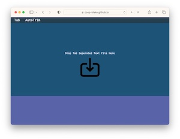
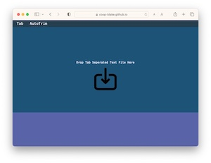

Tab Importer

UNFI Tools 
Trims and assembles a comma seperated list of column data from a tab or comma delimited file
Primarily used in the wild for getting a list of identifiers from exported
worksheets which can then be used for search and filtering.
Currently being developed for additional capabilities including larger file
support.
Try it
- Open link
- Drop text file
- Toggle Comma/Tab button to choose data separator
- Toggle AutoTrim to attempt removing header and footer rows
- Adjust header and footer length with triangle buttons, reset with AutoTrim
- Double Click column header number to produce comma seperated list in lower pane
Experimental